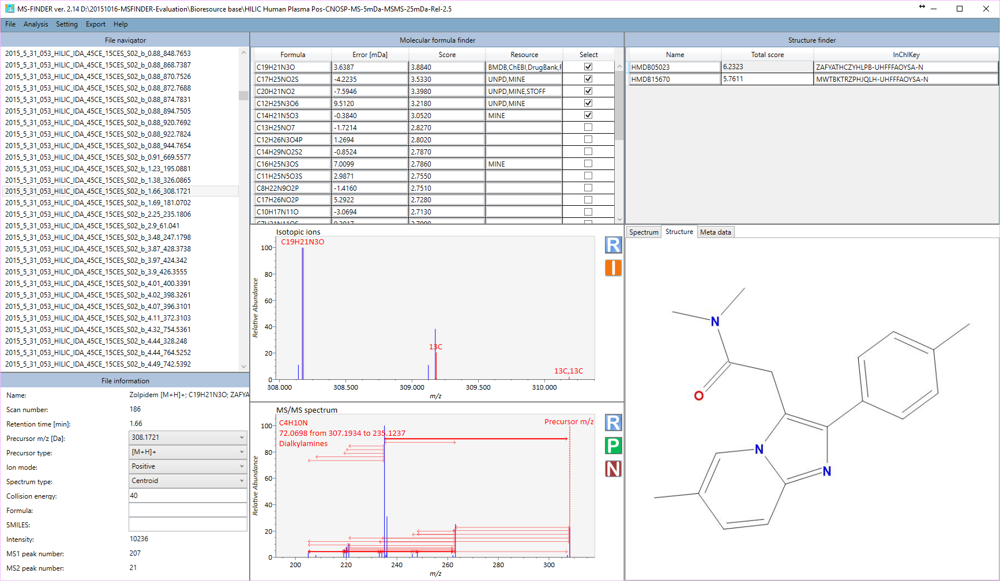

MS-FINDER
Objective
MS-FINDER was launched as a universal program for compound ‘annotation’ that supports EI-MS (GC/MS) and MS/MS spectral mining.
First, MS-FINDER aims to provide solutions for
1) formula predictions,
2) fragment annotations,
and 3) structure elucidations by means of unknown spectra.
In addition, the program can annotate your unknowns
by the public spectral databases such as MassBank, LipidBlast, and GNPS.
First, MS-FINDER aims to provide solutions for
1) formula predictions,
2) fragment annotations,
and 3) structure elucidations by means of unknown spectra.
In addition, the program can annotate your unknowns
by the public spectral databases such as MassBank, LipidBlast, and GNPS.

Please cite
Hydrogen rearrangement rules: computational MS/MS fragmentation and structure elucidation using MS-FINDER software. Analytical Chemistry 88, 7946-7958, 2016.  [ACS link]
[ACS link]
Identifying metabolites by integrating metabolome databases with mass spectrometry cheminformatics. Nature Methods, 15, 53-56, 2018 [NPG link]
Software
Library
Tutorial
Data templates
MSP format as query file.
MAT format as query file.
MAT format file including elements-fix information (the same format is used in MSP).
User defined structure library.
Retention time library (InChIKey and RT pairs).
CCS library (InChIKey, Adduct, and CCS pairs).
Retention time and structure data for retention time prediction.
Acknowledgement
This project was mainly supported
by NSF-JST Strategic International Collaborative Research Program (SICORP) for JP-US Metabolomics.
by NSF-JST Strategic International Collaborative Research Program (SICORP) for JP-US Metabolomics.
MS-FINDER is mainly developed between UC Davis Prof.
Oliver Fiehn team and RIKEN CSRS (and NIG) Prof. Masanori Arita team.
Oliver Fiehn team and RIKEN CSRS (and NIG) Prof. Masanori Arita team.